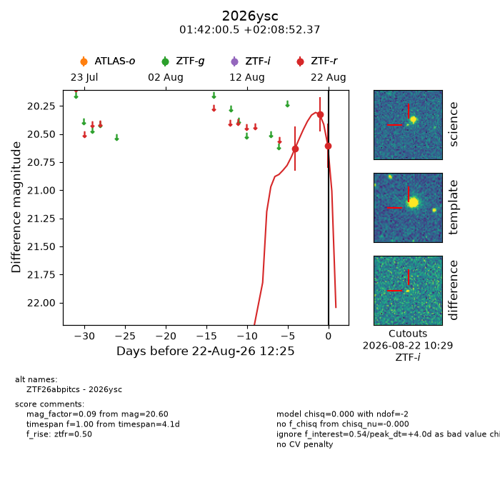
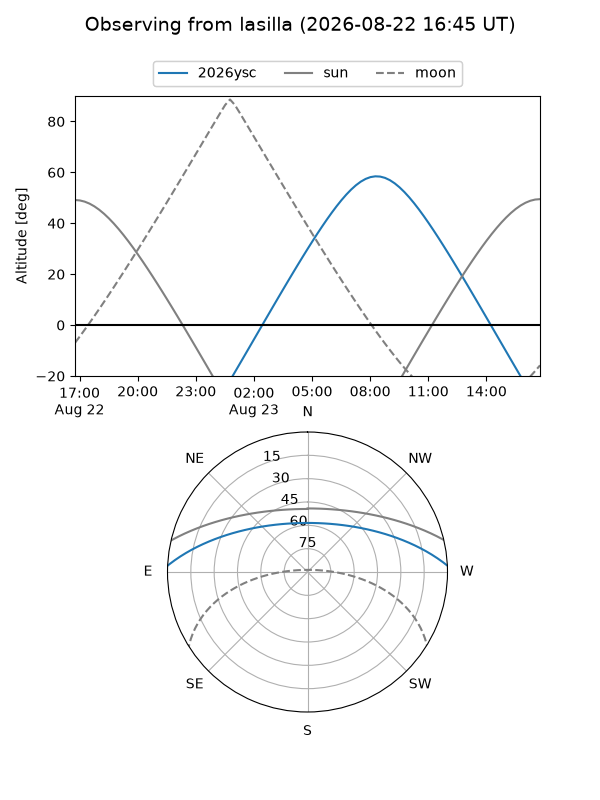
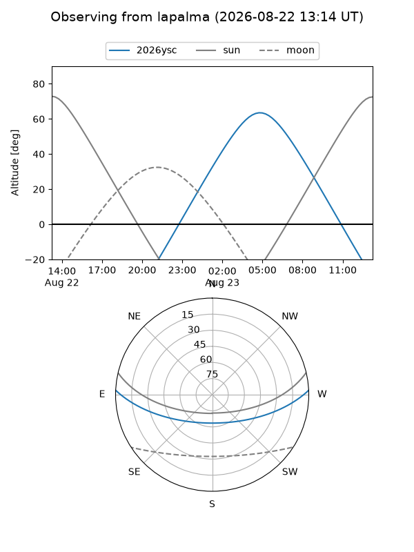
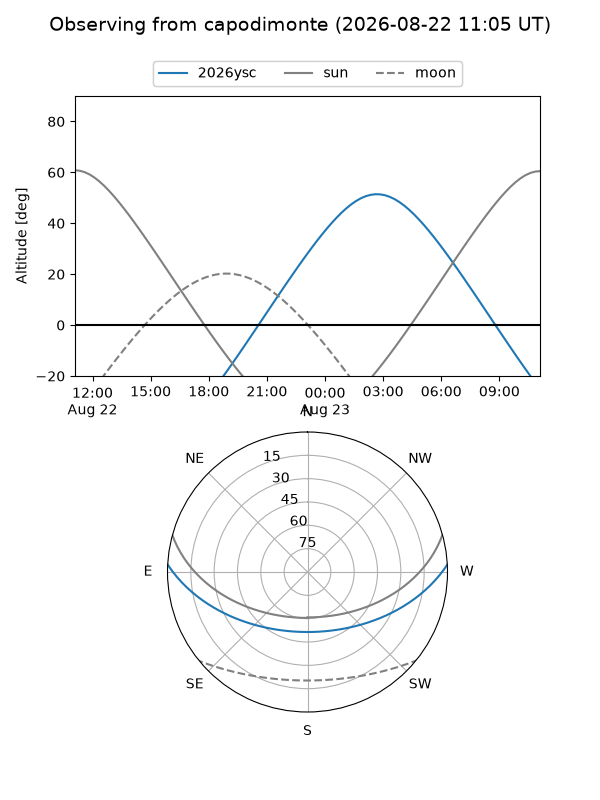
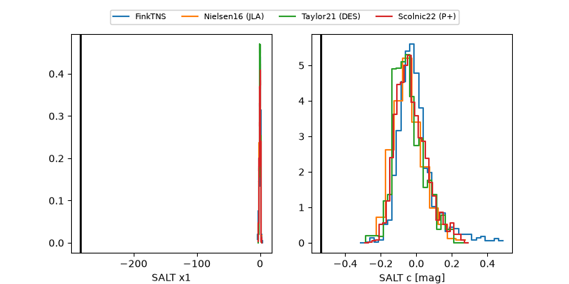

2026ysc
Target 2026ysc at 2026-08-22 12:28
Aliases and brokers:
FINK-ZTF: ztf.fink-portal.org/ZTF26abpitcs
Lasair-ZTF: lasair-ztf.lsst.ac.uk/objects/ZTF26abpitcs
ALeRCE-ZTF: alerce.online/object/ZTF26abpitcs
YSE-PZ: ziggy.ucolick.org/yse/transient_detail/2026ysc
TNS name: wis-tns.org/object/2026ysc
Direct TNS query: direct search
alt names
ZTF26abpitcs (ztf,fink_ztf)
2026ysc (tns,yse)
Coordinates:
equatorial (ra, dec) = 25.5023,+2.14788
equatorial (HMS+DMS) = 01:42:00.54,+02:08:52.37
galactic (l, b) = (147.5206,-58.28889)
Flags:
TNS type: nan
peak dt: +4.0
Photometry:
last ztfr=20.60
3 ztfr detections
Lightcurve

Visibility



Additional plots
